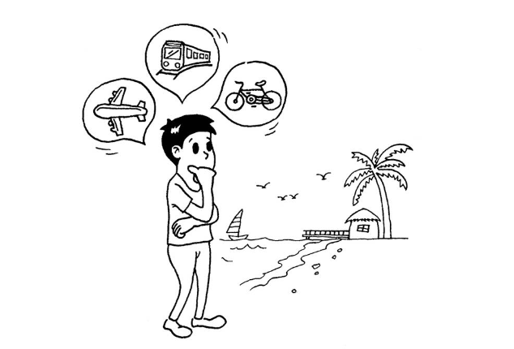

总结一下学习策略模式收获的知识。
策略模式的定义与理解
策略模式：定义一些列的算法，把它们一个个封装起来，并且使它们可以相互替换。
如果这么简单的大白话还不是太明白，那就引用文章的一句话：“条条大路通罗马”。再比如你去一个地方旅游，可以乘飞机去，可以坐火车去，也可以自驾去……

尽管采用的方式不同，但是我们可以根据情况选择一中适合的方式到达目的地，而且可以随意互相替换。这种解决方案就是所要说的策略模式。文章中引用“奖金的计算”、“缓动动画”、”表单校验“三个例子分别从模仿传统面向对象语言和策略模式两个方面进行了阐述与讲解，在这里我就只采用表单验证的例子。
传统表单验证
<html>
<body>
<form action="http://xxx.com/register" id="registerForm" method="post">
请输入用户名:<input type="text" name="userName"/ >
请输入密码:<input type="text" name="password"/ >
请输入手机号码:<input type="text" name="phoneNumber"/ >
<button>提交</button>
</form>
<script>
var registerForm = document.getElementById( 'registerForm' );
registerForm.onsubmit = function(){
if ( registerForm.userName.value === '' ){
alert ( '用户名不能为空' );
return false;
}
if ( registerForm.password.value.length < 6 ){
alert ( '密码长度不能少于 6 位' );
return false;
}
if ( !/(^1[3|5|8][0-9]{9}$)/.test( registerForm.phoneNumber.value ) ){
alert ( '手机号码格式不正确' );
return false;
}
}
</script>
<body>
</html>这是常见，也是我们习惯的代码编码方式，但是缺点很明显
- registerForm.onsubmit 函数比较庞大，包含了很多 if-else 语句，这些语句需要覆盖所有 的校验规则。
- egisterForm.onsubmit 函数缺乏弹性，如果增加了一种新的校验规则，或者想把密码的长 度校验从 6 改成 8，我们都必须深入 registerForm.onsubmit 函数的内部实现，这是违反开 放—封闭原则的。
- 算法的复用性差，如果在程序中增加了另外一个表单，这个表单也需要进行一些类似的 校验，那我们很可能将这些校验逻辑复制得漫天遍野。
策略模式重构表单验证
首先我们要清楚，策略模式指的是定义一系列的算法，把它们一个个封装起来。将不变的部分和变化的部分隔开是每个设计模式的主题，策略模式也不例外，策略模式的目的就是将算法的使用与算法的实现分离开来。一个基于策略模式的程序至少由两部分组成。第一个部分是一组策略类，策略类封装了具体 的算法，并负责具体的计算过程。 第二个部分是环境类 Context，Context 接受客户的请求，随后把请求委托给某一个策略类。要做到这点，说明 Context 中要维持对某个策略对象的引用。
// 第一步把校验逻辑都封装成策略对象
var strategies = {
isNonEmpty: function( value, errorMsg ){
if ( value === '' ){
return errorMsg ;
}
},
minLength: function( value, length, errorMsg ){
if ( value.length < length ){
return errorMsg;
}
},
isMobile: function( value, errorMsg ){ // 手机号码格式
if ( !/(^1[3|5|8][0-9]{9}$)/.test( value ) ){
return errorMsg;
}
}
};
// 接下来我们准备实现 Validator 类。Validator 类在这里作为 Context，负责接收用户的请求，并委托给 strategy 对象。
var Validator = function(){
this.cache = []; // 保存校验规则
};
Validator.prototype.add = function(dom, rule, errorMsg ){
var ary = rule.split( ':' ); // 把 strategy 和参数分开
this.cache.push(function(){ // 把校验的步骤用空函数包装起来，并且放入 cache
var strategy = ary.shift(); // 用户挑选的 strategy
ary.unshift( dom.value ); // 把 input 的 value 添加进参数列表
ary.push( errorMsg ); // 把 errorMsg 添加进参数列表
return strategies[ strategy ].apply(dom, ary)
});
};
Validator.prototype.start = function(){
for ( var i = 0, validatorFunc; validatorFunc = this.cache[ i++ ]; ){
var msg = validatorFunc(); // 开始校验，并取得校验后的返回信息
if ( msg ){ // 如果有确切的返回值，说明校验没有通过
return msg;
}
}
}
// 客户调用的时候就可以这样
var registerForm = document.getElementById( 'registerForm' );
var validataFunc = function(){
var validator = new Validator(); // 创建一个 validator 对象
/***************添加一些校验规则****************/
validator.add( registerForm.userName, 'isNonEmpty', '用户名不能为空' );
validator.add( registerForm.password, 'minLength:6', '密码长度不能少于 6 位' );
validator.add( registerForm.phoneNumber, 'isMobile', '手机号码格式不正确' );
var errorMsg = validator.start(); // 获得校验结果
return errorMsg; // 返回校验结果
}
registerForm.onsubmit = function(){
var errorMsg = validataFunc(); // 如果 errorMsg 有确切的返回值，说明未通过校验
if ( errorMsg ){
alert ( errorMsg );
return false; // 阻止表单提交
}
};从这段代码中可以看到，我们先创建了一个 validator 对象，然后通过 validator.add 方法，往 validator 对象中添加一些校验规则。validator.add 方法接受 3 个参数，以下面这句代码说明:
validator.add( registerForm.password, 'minLength:6', '密码长度不能少于 6 位' );
- registerForm.password 为参与校验的 input 输入框。
- ‘minLength:6’是一个以冒号隔开的字符串。冒号前面的 minLength 代表客户挑选的 strategy 对象，冒号后面的数字 6 表示在校验过程中所必需的一些参数。’minLength:6’的意思就是 校验 registerForm.password 这个文本输入框的 value 最小长度为 6。如果这个字符串中不包含冒号，说明校验过程中不需要额外的参数信息，比如’isNonEmpty’。
- 第 3 个参数是当校验未通过时返回的错误信息。
当我们往 validator 对象里添加完一系列的校验规则之后，会调用 validator.start()方法来 启动校验。如果 validator.start()返回了一个确切的 errorMsg 字符串当作返回值，说明该次校验 没有通过，此时需让 registerForm.onsubmit 方法返回 false 来阻止表单的提交。
使用策略模式重构代码之后，我们仅仅通过“配置”的方式就可以完成一个表单的校验， 这些校验规则也可以复用在程序的任何地方，还能作为插件的形式，方便地被移植到其他项 目中。
给某个文本输入框添加多种校验规则
目前我们的表单校验实现虽然已经改进了很多，但是还是留有一点小遗憾:一个文本输入框只能对应一种校验规则，比如，用户名输入框只能校验输入是否为空。如果我们既想校验它是否为空，又想校验它输入文本的长度不小于 10 呢? 我们现在只需要对 Validator 类的add方法稍加改造就行了：
Validator.prototype.add = function( dom, rules ){
var self = this;
for ( var i = 0, rule; rule = rules[ i++ ]; ){
(function( rule ){
var strategyAry = rule.strategy.split( ':' );
var errorMsg = rule.errorMsg;
self.cache.push(function(){
var strategy = strategyAry.shift();
strategyAry.unshift( dom.value );
strategyAry.push( errorMsg );
return strategies[ strategy ].apply( dom, strategyAry );
});
})( rule )
}
};
// 调用的时候也需要稍加改变
var validataFunc = function(){
var validator = new Validator();
validator.add( registerForm.userName, [{
strategy: 'isNonEmpty',
errorMsg: '用户名不能为空'
}, {
strategy: 'minLength:6',
errorMsg: '用户名长度不能小于 10 位'
}]);
validator.add( registerForm.password, [{
strategy: 'minLength:6',
errorMsg: '密码长度不能小于 6 位' 9
}]);
validator.add( registerForm.phoneNumber, [{
strategy: 'isMobile',
errorMsg: '手机号码格式不正确'
}]);
var errorMsg = validator.start();
return errorMsg;
}
策略模式的优缺点
策略模式是一种常用且有效的设计模式，从上边表单验证的例子中，我们可以总结出策略模式的一些优点。
- 策略模式利用组合、委托和多态等技术和思想，可以有效地避免多重条件选择语句。
- 策略模式提供了对开放—封闭原则的完美支持，将算法封装在独立的 strategy 中，使得它们易于切换，易于理解，易于扩展。
- 策略模式中的算法也可以复用在系统的其他地方，从而避免许多重复的复制粘贴工作。
- 在策略模式中利用组合和委托来让 Context 拥有执行算法的能力，这也是继承的一种更轻便的替代方案。
当然，策略模式也有一些缺点，但这些缺点并不严重。
首先，使用策略模式会在程序中增加许多策略类或者策略对象，但实际上这比把它们负责的逻辑堆砌在 Context 中要好。
其次，要使用策略模式，必须了解所有的 strategy，必须了解各个 strategy 之间的不同点，这样才能选择一个合适的 strategy。比如，我们要选择一种合适的旅游出行路线，必须先了解选择飞机、火车、自行车等方案的细节。此时 strategy 要向客户暴露它的所有实现，这是违反最少知识原则的。
虽然大部分都是照搬照抄的，但是确实从中学到了很多。我一直认为学会是一码事，会用又是一码事，所以还要在今后不断尝试，不断融会贯通。